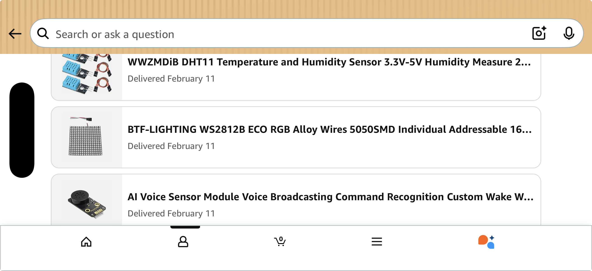
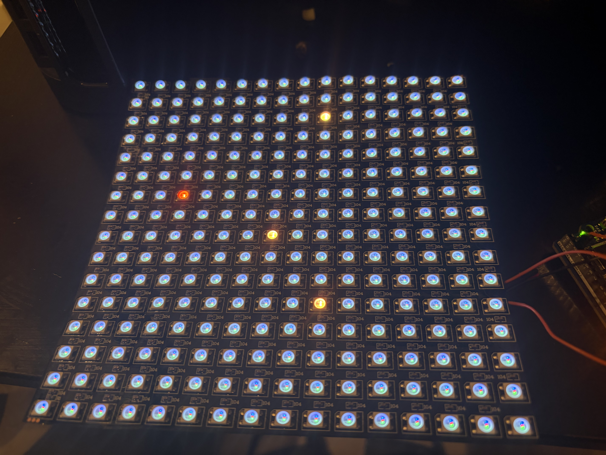
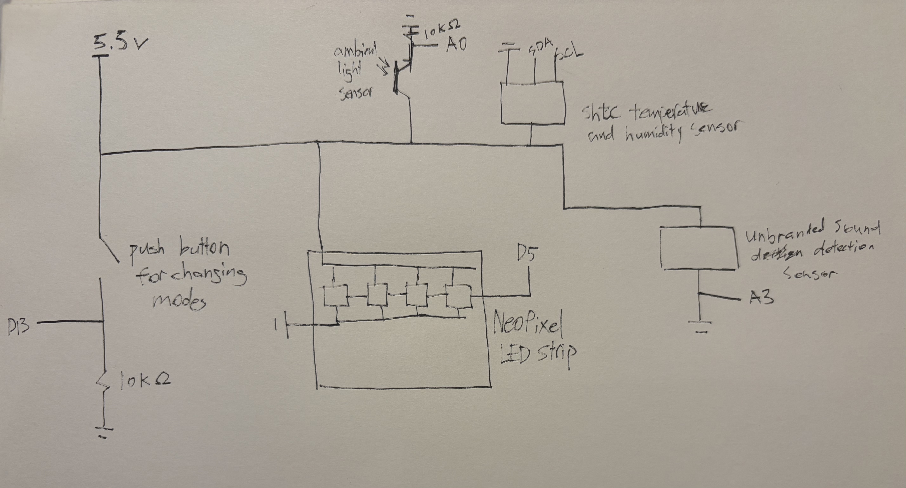
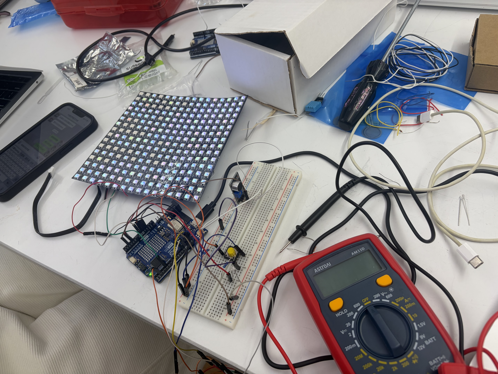
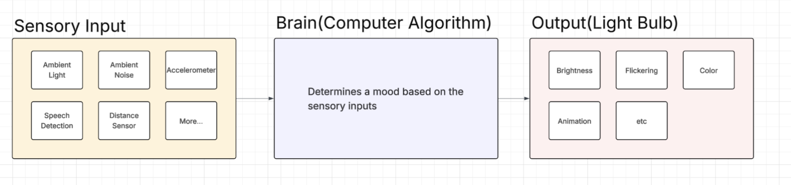

2026.2.23 Final Presentation
Ideation
Minnie and I started looking for potential sensors that can be used as the organism's sensory inputs. What we discovered was an AI voice sensor that is responsive to custom audio commands and a DHT11 temperature and humidity sensor. We also decided to use the noise and light sensors that we already have. After testing each sensor and making sure that they work as expected, we thought about ways to convert these quantifiable sensory inputs into abstract emotions.

We came up with two possible approaches:
- Map each sensor reading to a distinct physical property or an LED or multiple LEDs(color, brightness, shape, number, etc.).
- Come up with a complex algorithm that creates patterns that are based on, but not directly reflected by, the sensor readings.
We decided to stick with the second approach because it feels more organic and autonomous, rather than mechanical. Since, as humans, for example, we are not directly influenced by our environment. Our emotions may be negatively affected by something like bad weather, but the relationship is not absolute and necessary. Similarly, we wanted an internal logic that correlates the sensor readings to the LED display in a more implicit manner. To allow for the expression of complex patterns that offer more space to play with, we purchased a NeoPixel 16x16 LED strip, which provides 256 coloured LEDs.

Led Board Simulation & The Game of Life
We considered creating a Game of Life pattern where the constants are based on sensor readings. First, we made a simulation of the LED strip where each of the 256 LEDs is an object in p5.js. Next, we established and implemented some rules for this game:
- Initially, all LEDs are turned off.
- The program will turn on random LEDs and their neighbors(the spawn rate is determined by the amount of sound in the environment). These LEDs will come with an initial color whose warmth is determined by the temperature reading(the coolor the cooler the color and vice versa) and whose brightness is determined by the light sensor reading(the brighter the brighter the LED)
- A turned-on LED will turn on its neighboring LED in each iteration of the loop, passing its own LED value to them. However, random noise will be applied each time it happens. The amount of noise is determined by the humidity reading(the more humid the more noise)
- Each LED will have a lifespan and deactivate after a certain amount of time(400 milliseconds in most cases).
We also added 4 other versions of the simulation to showcase each property individually. Each version follows roughly the same idea, but with the other properties constant and only itself affected by the environment. For example, the temperature mode keeps the amount of noise, random spawn rate, and the brightness static while having the warmth of the light responsive to temperature. In the p5 version, we kept the sensory input values as variables that are controlled by sliders for easier testing.
Challenges
Originally, we thought of using the AI voice sensor as a way to make the LED board switch between different modes. For instance, a "how are you feeling" command will ask for it to display all its senses in the complete game of life. A "what are you seeing" command will ask for it to switch to brightness mode, etc. Yet, we found out in the documentation of the AI voice detection sensor that only a detection of its default commands can be signalled to an Arduino microcontroller. Customized commands, on the other hand, are only allowed to have an instantaneous audio response. Thus, we decided to switch to using a simple button to alternate between the different modes for the time being.
Next, we had to translate the game of life, written in JavaScript, to C++ code that an Arduino understands. We used ChatGPT to assist with translating the code. The ChatGPT response had many errors, such as not recognizing what values to remain static in certain modes, not resetting the LEDs when it switches to a new mode, etc. It was helpful, however, in introducing us to the way data structures are customizable in C++, how to write our own functions, etc. Building upon the code that it generated, we were able to translate the JavaScript program to Arduino.
#include <Arduino.h>
#include <Adafruit_NeoPixel.h>
#include <Wire.h>
#include "Adafruit_SHTC3.h"
// ---------------------------
// Global variables
// ---------------------------
#define LED_PIN 5
#define BUTTON_PIN 13
#define NOISE_SENSOR_PIN A3
#define TEMPERATURE_SENSOR_PIN 2
#define LIGHT_SENSOR_PIN A0
#define LED_COUNT 256
Adafruit_NeoPixel strip(LED_COUNT, LED_PIN, NEO_GRB + NEO_KHZ800);
// ---------------------------
// Custom data structures
// ---------------------------
struct RgbColor {
uint8_t r;
uint8_t g;
uint8_t b;
};
struct LedCell {
float h, s, v; // current HSV
float th, ts, tv; // target HSV
bool on;
long deadline; // -1 means not started
};
// ---------------------------
// Board + constants
// ---------------------------
static const uint8_t WIDTH = 16;
static const uint8_t HEIGHT = 16;
static const int H_MAX = 360;
static const int S_MAX = 100;
static const int B_MAX = 100;
static const uint16_t FRAME_MS = 125; // ~8 fps
LedCell board[WIDTH][HEIGHT];
// ---------------------------
// Inputs
// ---------------------------
enum Mode : uint8_t { MODE_FEELING,
MODE_TEMPERATURE,
MODE_HUMIDITY,
MODE_BRIGHTNESS,
MODE_NOISE,
MODE_COUNT };
Mode mode = MODE_FEELING;
bool PATTERN_DIAG = false;
bool PATTERN_CROSS = true;
bool PATTERN_SURROUND = false;
int ledColorH = 0;
int ledColorS = 100;
int ledColorV = 100;
float randomness = 0.3f;
int noiseAmount = 15;
float colorChangeSpeed = 0.8f;
int warmthSlider = 50; // 0..100
int brightnessSlider = 50; // 0..100
// ---------------------------
// Function prototypes
// ---------------------------
int clampi(int v, int lo, int hi);
int wrapHue(int h);
int mapInt(long x, long in_min, long in_max, long out_min, long out_max);
float rand01();
int randNoise(int n);
int shortestHueDiff(int from, int to);
uint16_t xyToId(uint8_t x, uint8_t y);
bool inBounds(int x, int y);
RgbColor hsvToRgb(int h, int s, int v);
void turnOffAll();
void turnOnAll();
void setDuration(uint16_t durationMs);
void changeColorTowardTarget(LedCell &c, float speed);
void applySpreadTo(int sx, int sy, int ox, int oy);
void patternDiag();
void patternCross();
void patternNeighbor();
void randomColorAll();
void randomTurnOn(float randomnessVal);
void setMode(Mode newMode);
void renderToStrip();
// ---------------------------
// Helper functions
// ---------------------------
int clampi(int v, int lo, int hi) {
return (v < lo) ? lo : (v > hi) ? hi
: v;
}
int wrapHue(int h) {
h %= H_MAX;
if (h < 0) h += H_MAX;
return h;
}
int mapInt(long x, long in_min, long in_max, long out_min, long out_max) {
if (in_max == in_min) return (int)out_min;
return (int)((x - in_min) * (out_max - out_min) / (in_max - in_min) + out_min);
}
float rand01() {
return (float)random(0, 10000) / 10000.0f;
}
int randNoise(int n) {
if (n <= 0) return 0;
return random(-n, n + 1);
}
int shortestHueDiff(int from, int to) {
int diff = wrapHue(to) - wrapHue(from);
if (diff > H_MAX / 2) diff -= H_MAX;
if (diff < -H_MAX / 2) diff += H_MAX;
return diff;
}
// ---------------------------
// Mapping
// ---------------------------
uint16_t xyToId(uint8_t x, uint8_t y) {
if (y % 2 == 0) return (uint16_t)x + (uint16_t)y * WIDTH;
return (uint16_t)(WIDTH - 1 - x) + (uint16_t)y * WIDTH;
}
bool inBounds(int x, int y) {
return x >= 0 && x < (int)WIDTH && y >= 0 && y < (int)HEIGHT;
}
// ---------------------------
// HSV -> RGB
// ---------------------------
RgbColor hsvToRgb(int h, int s, int v) {
float hf = (float)wrapHue(h) / 60.0f;
float sf = clampi(s, 0, 100) / 100.0f;
float vf = clampi(v, 0, 100) / 100.0f;
int i = (int)floor(hf);
float f = hf - i;
float p = vf * (1.0f - sf);
float q = vf * (1.0f - sf * f);
float t = vf * (1.0f - sf * (1.0f - f));
float r = 0, g = 0, b = 0;
switch (i % 6) {
case 0:
r = vf;
g = t;
b = p;
break;
case 1:
r = q;
g = vf;
b = p;
break;
case 2:
r = p;
g = vf;
b = t;
break;
case 3:
r = p;
g = q;
b = vf;
break;
case 4:
r = t;
g = p;
b = vf;
break;
case 5:
r = vf;
g = p;
b = q;
break;
}
RgbColor out;
out.r = (uint8_t)clampi((int)lround(r * 255.0f), 0, 255);
out.g = (uint8_t)clampi((int)lround(g * 255.0f), 0, 255);
out.b = (uint8_t)clampi((int)lround(b * 255.0f), 0, 255);
return out;
}
// ---------------------------
// Core behavior
// ---------------------------
void turnOffAll() {
for (uint8_t x = 0; x < WIDTH; x++)
for (uint8_t y = 0; y < HEIGHT; y++) {
board[x][y].on = false;
board[x][y].th = 0;
board[x][y].ts = 100;
board[x][y].tv = 0;
board[x][y].deadline = -1;
}
}
void turnOnAll() {
for (uint8_t x = 0; x < WIDTH; x++)
for (uint8_t y = 0; y < HEIGHT; y++) {
board[x][y].on = true;
board[x][y].deadline = 999999999L;
}
}
void setDuration(uint16_t durationMs) {
unsigned long now = millis();
for (uint8_t x = 0; x < WIDTH; x++)
for (uint8_t y = 0; y < HEIGHT; y++) {
LedCell &c = board[x][y];
if (c.on) {
//refresh deadline every frame while it's on
c.deadline = (long)(now + durationMs);
} else if (c.deadline > 0 && c.deadline <= (long)now) {
c.deadline = -1;
}
}
// second pass: turn off expired
for (uint8_t x = 0; x < WIDTH; x++)
for (uint8_t y = 0; y < HEIGHT; y++) {
LedCell &c = board[x][y];
if (c.deadline > 0 && c.deadline <= (long)now) c.on = false;
}
}
void changeColorTowardTarget(LedCell &c, float speed) {
int dh = shortestHueDiff((int)c.h, (int)c.th);
c.h += (float)dh * speed;
c.s += (c.ts - c.s) * speed;
c.v += (c.tv - c.v) * speed;
c.h = (float)wrapHue((int)lround(c.h));
c.s = clampi((int)lround(c.s), 0, S_MAX);
c.v = clampi((int)lround(c.v), 0, B_MAX);
}
void applySpreadTo(int sx, int sy, int ox, int oy) {
if (!inBounds(sx, sy) || !inBounds(ox, oy)) return;
if (mode == MODE_TEMPERATURE) {
if (sx >= 7 && sx <= 8 && sy >= 7 && sy <= 8) return;
}
LedCell &sur = board[sx][sy];
LedCell &org = board[ox][oy];
sur.on = true;
float dh = (org.th - sur.h);
float ds = (org.ts - sur.s);
float dv = (org.tv - sur.v);
int newH = wrapHue((int)lround(sur.h + 0.7f * dh + 0.2f * randNoise(noiseAmount)));
int newS = clampi((int)lround(sur.s + 0.7f * ds + 0.2f * randNoise(noiseAmount)), 0, S_MAX);
int newV = clampi((int)lround(sur.v + 0.7f * dv + 1.0f * randNoise(noiseAmount)), 0, B_MAX);
sur.th = newH;
sur.ts = newS;
sur.tv = newV;
}
void patternDiag() {
for (int x = 0; x < (int)WIDTH; x++)
for (int y = 0; y < (int)HEIGHT; y++) {
if (!board[x][y].on) continue;
applySpreadTo(x - 1, y - 1, x, y);
applySpreadTo(x - 1, y + 1, x, y);
applySpreadTo(x + 1, y - 1, x, y);
applySpreadTo(x + 1, y + 1, x, y);
}
}
void patternCross() {
for (int x = 0; x < (int)WIDTH; x++)
for (int y = 0; y < (int)HEIGHT; y++) {
if (!board[x][y].on) continue;
applySpreadTo(x - 1, y, x, y);
applySpreadTo(x + 1, y, x, y);
applySpreadTo(x, y - 1, x, y);
applySpreadTo(x, y + 1, x, y);
}
}
void patternNeighbor() {
for (int x = 0; x < (int)WIDTH; x++)
for (int y = 0; y < (int)HEIGHT; y++) {
if (!board[x][y].on) continue;
applySpreadTo(x - 1, y, x, y);
applySpreadTo(x + 1, y, x, y);
applySpreadTo(x, y - 1, x, y);
applySpreadTo(x, y + 1, x, y);
applySpreadTo(x - 1, y - 1, x, y);
applySpreadTo(x - 1, y + 1, x, y);
applySpreadTo(x + 1, y - 1, x, y);
applySpreadTo(x + 1, y + 1, x, y);
}
}
void randomColorAll() {
for (uint8_t x = 0; x < WIDTH; x++)
for (uint8_t y = 0; y < HEIGHT; y++) {
board[x][y].h = random(0, H_MAX);
board[x][y].s = random(0, S_MAX + 1);
board[x][y].v = random(0, B_MAX + 1);
}
}
void randomTurnOn(float randomnessVal) {
if (rand01() > randomnessVal) {
int x = random(1, 15);
int y = random(1, 15);
board[x][y].on = true;
board[x][y].deadline = (long)(millis() + 900);
board[x + 1][y].on = true;
board[x - 1][y].on = true;
board[x][y + 1].on = true;
board[x][y - 1].on = true;
int h = ledColorH, s = ledColorS, v = ledColorV;
board[x][y].th = h;
board[x][y].ts = s;
board[x][y].tv = v;
board[x + 1][y].th = h;
board[x + 1][y].ts = s;
board[x + 1][y].tv = v;
board[x - 1][y].th = h;
board[x - 1][y].ts = s;
board[x - 1][y].tv = v;
board[x][y + 1].th = h;
board[x][y + 1].ts = s;
board[x][y + 1].tv = v;
board[x][y - 1].th = h;
board[x][y - 1].ts = s;
board[x][y - 1].tv = v;
}
}
int duration = 400;
void setMode(Mode newMode) {
mode = newMode;
if (mode == MODE_FEELING) {
turnOffAll();
duration = 400;
PATTERN_DIAG = false;
PATTERN_CROSS = true;
PATTERN_SURROUND = false;
} else if (mode == MODE_TEMPERATURE) {
turnOffAll();
board[7][7].on = board[7][8].on = board[8][7].on = board[8][8].on = true;
board[7][7].deadline = board[7][8].deadline = board[8][7].deadline = board[8][8].deadline = 999999999L;
brightnessSlider = 50;
randomness = 1;
noiseAmount = 10;
PATTERN_DIAG = false;
PATTERN_CROSS = false;
PATTERN_SURROUND = true;
} else if (mode == MODE_BRIGHTNESS) {
turnOffAll();
board[7][7].on = board[7][8].on = board[8][7].on = board[8][8].on = true;
board[7][7].deadline = board[7][8].deadline = board[8][7].deadline = board[8][8].deadline = 999999999L;
warmthSlider = 50;
randomness = 1;
noiseAmount = 10;
PATTERN_DIAG = false;
PATTERN_CROSS = false;
PATTERN_SURROUND = true;
} else if (mode == MODE_HUMIDITY) {
turnOffAll();
turnOnAll();
warmthSlider = 50;
brightnessSlider = 50;
randomness = 1;
PATTERN_DIAG = false;
PATTERN_CROSS = true;
PATTERN_SURROUND = false;
} else if (mode == MODE_NOISE) {
turnOffAll();
duration = 10;
warmthSlider = 50;
noiseAmount = 10;
brightnessSlider = 50;
PATTERN_DIAG = false;
PATTERN_CROSS = false;
PATTERN_SURROUND = false;
}
}
void renderToStrip() {
const uint8_t offGray = 30;
for (uint8_t x = 0; x < WIDTH; x++) {
for (uint8_t y = 0; y < HEIGHT; y++) {
uint16_t id = xyToId(x, y);
LedCell &c = board[x][y];
if (!c.on) {
strip.setPixelColor(id, offGray, offGray, offGray);
} else {
RgbColor rgb = hsvToRgb((int)c.h, (int)c.s, (int)c.v);
strip.setPixelColor(id, rgb.r, rgb.g, rgb.b);
}
}
}
strip.show();
}
// ---------------------------
// Arduino timing
// ---------------------------
unsigned long lastFrame = 0;
Adafruit_SHTC3 shtc3 = Adafruit_SHTC3();
void setup() {
randomSeed(analogRead(A0));
pinMode(BUTTON_PIN, INPUT);
pinMode(TEMPERATURE_SENSOR_PIN, INPUT);
pinMode(A1, INPUT);
pinMode(NOISE_SENSOR_PIN, INPUT);
Serial.begin(9600);
if (!shtc3.begin()) {
Serial.println("Couldn't find SHTC3 sensor!");
while (1) delay(10);
}
strip.begin();
strip.setBrightness(7);
strip.clear();
strip.show();
// init cell defaults
for (uint8_t x = 0; x < WIDTH; x++)
for (uint8_t y = 0; y < HEIGHT; y++) {
board[x][y].h = board[x][y].s = board[x][y].v = 0;
board[x][y].th = board[x][y].ts = board[x][y].tv = 0;
board[x][y].on = false;
board[x][y].deadline = -1;
}
lastFrame = millis();
}
float temperature;
float humidity1;
int noise;
int buttonState;
int brightness;
int previousButtonState = LOW;
int previousMillis = 2000;
void getTemperatureAndHumidity() {
sensors_event_t humidity, temp;
shtc3.getEvent(&humidity, &temp);
temperature = temp.temperature;
humidity1 = humidity.relative_humidity;
delay(200);
}
void loop() {
buttonState = digitalRead(BUTTON_PIN);
if (previousMillis - millis() >= 1000) {
brightness = analogRead(A1);
//0 - 40 temp
//0 - 50 humidity
getTemperatureAndHumidity();
Serial.print("brightness: ");
//10 - 40
Serial.println(brightness);
noise = analogRead(NOISE_SENSOR_PIN);
Serial.print("noise: ");
Serial.println(noise);
if (mode == MODE_FEELING) {
noiseAmount = map(humidity1, 0, 50, 3, 15);
warmthSlider = map(temperature, 0, 30, 0, 100);
brightnessSlider = map(brightness, 10, 40, 0, 100);
randomness = map(noise, 0, 50, 0.9f, 0.3f);
} else if (mode == MODE_TEMPERATURE) {
warmthSlider = map(temperature, 0, 30, 0, 100);
} else if (mode == MODE_HUMIDITY) {
noiseAmount = map(humidity1, 0, 50, 3, 15);
} else if (mode == MODE_BRIGHTNESS) {
brightnessSlider = map(brightness, 10, 40, 0, 100);
} else {
randomness = map(noise, 0, 900, 0.9f, 0.3f);
}
previousMillis = millis() + 1000;
}
if (previousButtonState != buttonState) {
if (buttonState == HIGH) {
mode = static_cast<Mode>((mode + 1) % MODE_COUNT);
turnOffAll();
setMode(mode);
}
previousButtonState = buttonState;
}
unsigned long now = millis();
if (now - lastFrame < FRAME_MS) return;
lastFrame = now;
if (PATTERN_DIAG) patternDiag();
if (PATTERN_CROSS) patternCross();
if (PATTERN_SURROUND) patternNeighbor();
if (mode == MODE_FEELING) {
int h = mapInt(warmthSlider, 0, 100, 0, H_MAX - 140);
int v = mapInt(brightnessSlider, 0, 100, 10, B_MAX);
} else if (mode == MODE_TEMPERATURE) {
int h = mapInt(warmthSlider, 0, 100, 0, H_MAX - 140);
board[7][7].th = h;
board[7][7].ts = 100;
board[7][7].tv = 100;
board[7][8].th = h;
board[7][8].ts = 100;
board[7][8].tv = 100;
board[8][7].th = h;
board[8][7].ts = 100;
board[8][7].tv = 100;
board[8][8].th = h;
board[8][8].ts = 100;
board[8][8].tv = 100;
} else if (mode == MODE_BRIGHTNESS) {
int v = mapInt(brightnessSlider, 0, 100, 10, B_MAX);
board[7][7].th = ledColorH;
board[7][7].ts = 100;
board[7][7].tv = v;
board[7][8].th = ledColorH;
board[7][8].ts = 100;
board[7][8].tv = v;
board[8][7].th = ledColorH;
board[8][7].ts = 100;
board[8][7].tv = v;
board[8][8].th = ledColorH;
board[8][8].ts = 100;
board[8][8].tv = v;
} else if (mode == MODE_NOISE) {
turnOffAll();
randomTurnOn(randomness);
randomColorAll();
}
randomTurnOn(randomness);
setDuration(duration);
for (uint8_t x = 0; x < WIDTH; x++)
for (uint8_t y = 0; y < HEIGHT; y++)
changeColorTowardTarget(board[x][y], colorChangeSpeed);
renderToStrip();
}
Physical Implementation
Finally, we connected an Arduino microcontroller to the sensors that mapped the sensor readings to their corresponding values in the game of life simulation. We decided to stick it to my sweater using hot glue to resemble a living humanoid robot. The wires represent its veins, while the sensors are its sensory organs. The ledboard represents its expressive organs that reflect its inner state, which is the program that runs on the hardware.


2026.2.8 Stepping Stone Exercise
The intention of this project is to create a simple calculator that is able to compute the sum of two single-digit numbers. We started by first building it on a simulation program online to make sure that the logic was correct.


After we were able to successfully build the calculator on the simulation program, we then moved on to building the physical version. Finally, we implemented the following code:
int tensDigitPin = 5;
int onesDigitPin = 6;
int firstInputPin = 2;
int secondInputPin = 3;
int calculatePin = 4;
int firstNumber = 0;
int secondNumber = 0;
int firstButtonPreviousState = LOW;
int secondButtonPreviousState = LOW;
int calculateButtonPreviousState = LOW;
void setup(){
pinMode(tensDigitPin, OUTPUT);
pinMode(onesDigitPin, OUTPUT);
pinMode(firstInputPin, INPUT);
pinMode(secondInputPin, INPUT);
pinMode(calculatePin, INPUT);
Serial.begin(9600);
}
int firstButtonState;
int secondButtonState;
int calculateButtonState;
void loop(){
firstButtonState = digitalRead(firstInputPin);
secondButtonState = digitalRead(secondInputPin);
calculateButtonState = digitalRead(calculatePin);
if(firstButtonState != firstButtonPreviousState && firstButtonState == HIGH){
firstNumber = (firstNumber + 1) % 10;
}
if(secondButtonState != secondButtonPreviousState && secondButtonState == HIGH){
secondNumber = (secondNumber + 1) % 10;
}
if(calculateButtonState != calculateButtonPreviousState && calculateButtonState == HIGH){
int result = firstNumber + secondNumber;
Serial.print(result);
int tensDigit = result / 10;
int onesDigit = result % 10;
for(int i = 0; i < tensDigit; i++){
digitalWrite(tensDigitPin, HIGH);
delay(500);
digitalWrite(tensDigitPin, LOW);
delay(500);
}
for(int i = 0; i < onesDigit; i++){
digitalWrite(onesDigitPin, HIGH);
delay(500);
digitalWrite(onesDigitPin, LOW);
delay(500);
}
firstNumber = 0;
secondNumber = 0;
}
secondButtonPreviousState = secondButtonState;
firstButtonPreviousState = firstButtonState;
calculateButtonPreviousState = calculateButtonState;
delay(50);
}
2026.2.8 Ideation

Description
We want to give personality to a light bulb by using different sensors. The user’s interaction with these sensors will impact how the light bulb reacts. For example, the user can talk to the light bulb through a microphone. They can touch (pressure sensor) the light bulb, or maybe the temperature or will influence how the light bulb reacts, etc. The light bulb will express different emotions such as joy, anger, nervousness, etc. through change in color and change in brightness.
Inspiration
We took inspiration from: What if buttons have personality (Hayeon Hwang’ Expressive Controls)? What if your button is indecisive (David Yang’s Indecisive Button)? We are inspired by the idea to give light bulb personalities and life. We want to program a programmable light bulb to express its feelings based on user interactions.
Material List(tentative)
- 1 Arduino chip
- 1 Programmable light bulb
- Wires
- 1 Breadboard
- 1 Light sensor
- 1 Pressure sensor
- 1 Temperature sensor
- 1 Humidity sensor
- Other sensors
Timeline
Week 1
Step 1: buy Sensors and a programmable light bulb
Step 2: design an algorithm for determining different emotions of the light bulb based on sensor inputs
Week 2
Step 3: Animate the light bulb
Step 4: finalize the physical design(wiring, physical mechanism, material, etc)